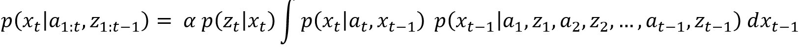
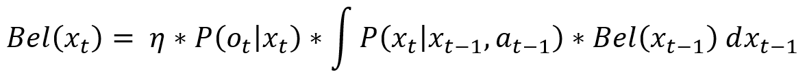
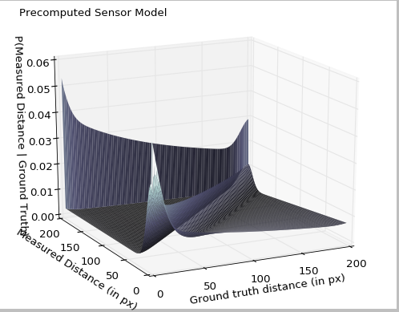
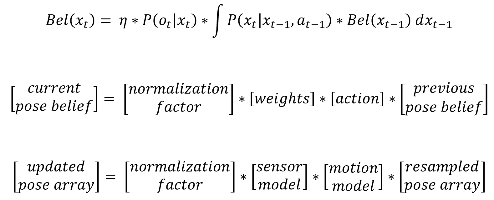
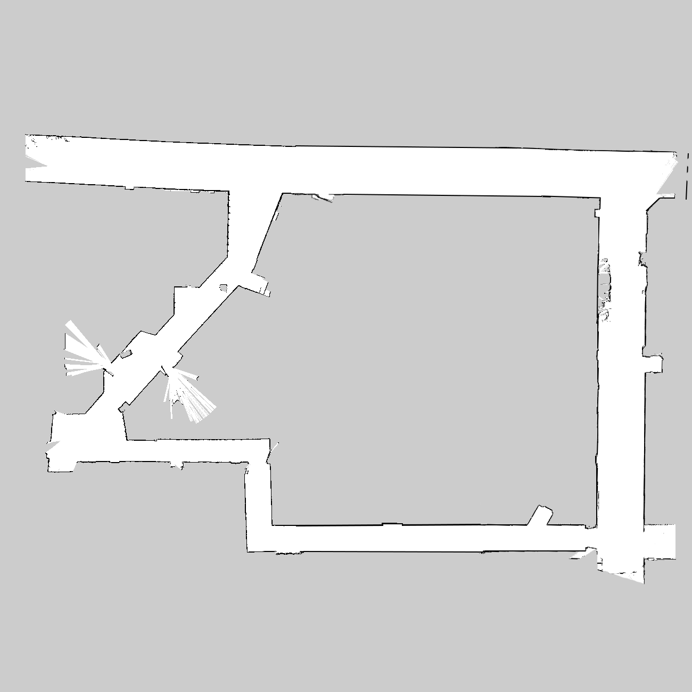
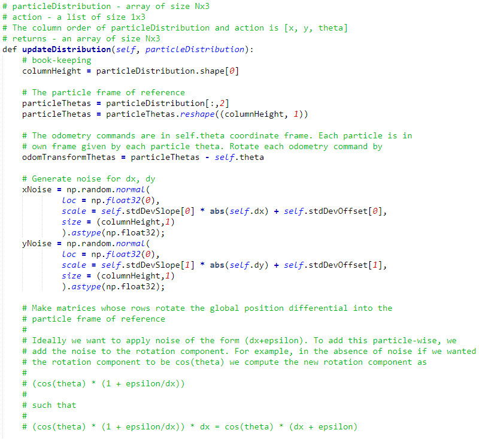
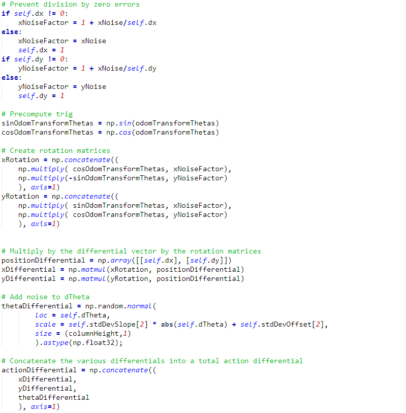
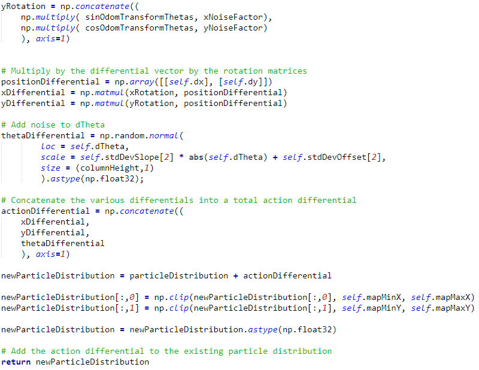

Lab 5 Report
Download as a PDF1 Introduction
Localization is an issue that needs to be addressed often in robotics, specifically in mobile robotics. This means that the robot is reliably aware of where it is relative to some coordinate system. There are many algorithms to support this goal, ranging from basic algorithms which only utilize expectations based on odometry, to more advanced ones that also use external sensing methods. Still, localization is continually being researched and developed in the field of robotics.
1.1 Objectives
The objective of this lab is to implement a Monte Carlo Localization (MCL) algorithm on the RACECAR, with the intent of the robot being able to localize in a map of the Stata tunnels. It should be able to localize from the Gazebo simulation as well as on the real robot while in the tunnels. This lab is also intended to allow for practice debugging with visualization methods.
1.2 Theory
As defined in lecture, the problem of localization is to use sensing to determine the pose (position and orientation) of the robot with respect to some given representation of the environment. In this lab, the environment is represented in the local coordinate frame of the map that is passed into the implementation, in this case we are using a 2D map of the MIT tunnel system underneath the Stata Center. The localization algorithm implemented here is a Monte Carlo Localization, or Particle Filter. This type of localization utilizes proprioceptive sensors and exteroceptive sensors because use of only internal odometry estimations is known to gain error over time while exteroceptive sensors give reference points within the reference frame of localization, effectively canceling accumulated error. Because of the use of exteroceptive sensors the localization is much more reliable than basic localization methods such as open-loop pose estimation or dead reckoning that use only odometry commands to maintain estimates with respect to the initial coordinate frame.
Alternatively, a particle filter implementation uses Bayes Filter to account for separate measurement and dynamics models and also applies the Markov assumption that if the system state is known at time t, future measurements are independent of past ones. This means that the measurement only depends on the current pose. This means that implementation does not require backlogging of all previous states, and only needs to update the pose belief over consecutive measurement readings. The term pose belief is used because localization is an entirely probabilistic state estimation process of updating the belief based on knowledge of actions and observations, and defining it as a belief accounts for the inherent uncertainty. Bayes Filter as a general solution takes the the last state, uses the most recent action and measurement observations, and is able to find the current state – or more correctly worded, the probability of the current state is found from the probability of the last state. This is why it is important to define what we are calculating through localization as a belief. Mathematically this can be represented by the following form of the Bayes’ Filter:
Where ai are the actions and zi are the measurements.
As described in the lab write-up, the MCL algorithm relies on the Markov assumption, Bayes’ rule, and the Law of Total Probability to yield the recursive belief update equation:
This equation is explored in further detail with regards to implementation in Section 2.4 below, but it can be noted here that implementation will also be utilizing the basic characteristic of Monte Carlo algorithms as applied to any situation, which is implementation of importance sampling from the original sample.
[Caroline]
2 Methodology
Implementation of the particle filter localization was split into the main sections of motion model, sensor model, and Monte Carlo Localization (MCL) update. At a high level, these sections function as follows: the motion model takes the initial state and the published odometry messages in order to find the probability of the current estimated state given the previous state and the most recent action, the sensor model takes the published LiDar messages to find the probability of the readings given the current estimated state from the motion model. The MCL algorithm then updates the state, normalizes the "weights" or probabilities of each pose and calculates the current pose belief. This can then be used to visualize the robot pose in the map of the MIT tunnels.
Before more detailed descriptions of the implementations of each of part of the particle filter, background about the ParticleFilter class is to be discussed.
2.1 Inputs and Outputs of Functions
The ParticleFilter class includes functions to support the algorithm update, calculation of the expected pose, and localization visualization. ParticleFilter class also includes the sensor model and supporting functions. Note that the motion model and supporting functions are in the separate class MotionModel, which will be detailed separately below. Documentation details of some of the important functions in ParticleFilter are included here:
- __init__(self) : Subscribes ParticleFilter to Laserscan topic for LiDAR readings. Publishes inferred pose to the PoseStamped topic, the particle array to the PoseArray topic, and the fake scan to the LaserScan topic for use in visualization(). Initializes algorithm parameters from the localization.launch file as global variables. Note, the number of particles used in the particle filter implementation, N, is defined in the script as self.MAX_PARTICLES.
- initializeMotionModel(self) : Defines the pixel boundaries of the map so that all particles exist within the bounds of the PNG file. Calls class MotionModel to initialize with the ParticleFilter.update() function and these calculated map boundaries.
- precompute_sensor_model(self) : Computes the sensor model table, a numpy array of size NxN. This array determines the probability of some LiDAR observation given the true pose. This sensor model table is used for ray casting with RangeLibc in the sensor model. All calculations in this function are done in units of pixels.
- visualize_sensor_model_table(self) : Generates 3D visualization plot of the sensor model table for debugging of the sensor model precomputation. The range and distance are the plane and the probabilities (normalized) are in the height direction.
- sensor_model(self) : The function returns nothing, but modifies self.weights for query points in self.particles based on the ray casting and the most recent LiDAR observation.
- initializeParticles(self) : Initializes pose array self.particles in the unoccupied spaces in the map. These particles exist uniformly in the halls of the tunnels in the initial state.
- publish_tf(self) : Transforms inferred pose of size 1x3 to be used by visualize() in visualization of the localization algorithm on the 2D map. Orientation is given as a quaternion.
- visualize(self) : Overlays arrows representing all rows of the pose array (includes N = self.MAX_PARTICLES number of particles, or arrows) into the 2D map. This function uses fake scan to generate a scan from the inferred pose to compare to actual pose.
- lidarCB(self, msg) : Callback run when LiDAR information is received from LaserScan. Initializes arrays for visualization methods. Stores information to be used in the MCL update.
- expected_pose(self) : Returns expected value of the pose as array of size 1x3 given the particle distribution as updated by the motion model and MCL algorithm.
- update(self) : Implements MCL algorithm to update pose array and pose weights. Calls expected_pose() to update global variable self.inferred_pose to be published. Function is called to update at frequency of odometry messages.
Documentation of the MotionModel class are included here. This class only involves updating of the pose array by applying the action through the motion model:
- __init__(self, updateModelFunction) : Initializes global variables for pose x, y, and θ. Sets map image boundaries. Defines Gaussian parameters for randomness model. Subscribes MotionModel class to Odometry topic.
- odometryCallback(self, msg) : Parses message from Odometry topic to updated global position as estimated by the robot on-board odometry system. Calculates self.dx, self.dy, and self.dtheta of the action for use by updateDistribution(). Calls updateModelFunction() set as ParticleFilter.update() for MCL update at each instance of odometry callback.
- updateDistribution(self, particleDistribution) : Takes input argument particleDistribution which is an array of size Nx3. The resampled pose array self.particles is passed into the function from ParticleFilter.update() to run the motion model action update algorithm.
[Caroline]
2.1 Motion Model
The RACECAR on-board odometry publishes to the rostopic Odometry from which the motion model can use the action commands sent to the robot, including steering angle and speed, and the robot estimation of global position. This global position is assumed to be inaccurate over the duration of control, which is why the localization process is required even for cases when initial state is known (not taking a case of the kidnapped robot problem into account). Instead, this motion model implementation assumes that the change in global position between consecutive odometry readings is still accurate, so it will calculate change in pose from this global position estimate update.
The callback function odometryCallback() is called whenever an odometry message is received over the subscribed topic Odometry in the class MotionModel. It first parses the odometry message to define the x and y positions, and then converts the orientation quaternion to radians. From each of these odometry positions are subtracted the x, y, and θ from the previous odometry message in order to find Δx, Δy, and Δθ of the most recent action. We will then perturb that action by a noise model, transform the coordinates and add it to the particle positions. The motion model can effectively be described by the following equation:
[ new particle positions ] = [ old particle positions ] + [ action ] + [ noise ]
The pose array from the previous localization iteration, self.particles, is then input into updateDistribution(). We add random noise εi to each Δ values for each particle. This noise is gaussian, and has a standard deviation that increases with the size of the Δ value. In other words the more faster the robot is moving in a particular dimension, the less certain we are about the odometry readings from in that dimension. The standard deviation is offset by a small constant so that the system is noisy even when it is standing still.
The noisy Δix Δiy values for each particle i are then rotated into each particle's local frame of reference. To do this we rotate from the global odometry θ to the local particle θi. This is done by applying a 2D rotation matrix of angle θi - θ to each Δix and Δiy to produce Δix’ and Δiy’
We then simply need to add this perturbation to each particle:
xi = xi + Δix’xi = xi + Δix’
xi = xi + Δix’
We also clip the particle locations to be within the bounds of the map. This prevents a segfault in RangeLibc. We have code which maintains that particles stay within unoccupied squares, however this skews the expected value of the pose as the robot drives close to the wall and is generally inefficient to compute.
For efficiency considerations, rather than adding noise to each position difference and then having to apply a rotation matrix individually to each of these differences, we add the noise to the rotation matrix. For example to compute the new x direction we want to compute
Δix’ = [cos(θi - θ) -sin(θi - θ)] [Δx+εx,i Δy+εy,i]TThis is equivalent to:
Δix’ = [cos(θi - θ)(1+εx,i/Δx) -sin(θi - θ)(1+εy,i/Δy)] [Δx Δy]TThis formula is obviously undefined for stationary motion because of division by zero. If for example Δx = 0, we instead compute.
Δix’ = [cos(θi - θ)(εx,i) -sin(θi - θ)(1+εy,i/Δy)] [1 Δy]TThe case for Δiy’ is similar.
Having a relatively high variance in the noise of the motion model is particularly important for the sensor model. The more noise is added in the motion model, the more options the sensor model has to pick from and tune to. This is particularly great for inconsistencies in the map. For example, there is a pole on the map that does not exist in the simulation. As the robot approaches the pole, the sensor becomes less certain about where it is and will not move past the pole. However the motion model has enough variance that particles will randomly propagate through the pole.
[Trevor and Caroline]
2.3 Precomputed Sensor Model
The sensor model ray casting processes requires computation of a sensor model table before running the sensor model update function. This table provides the probability of a LIDAR sensor measurement given the actual distance to some object in the map. It is generated by precompute_sensor_model(). It combines the probability of detecting a known obstacle in the map, the probability of a short measurement due to unknown obstacles, the probability of a missed measurement due to a reflected LiDAR beam, and the probability of a random measurement. The probability of a shorter reading than expected is represented by a linear probability that decreases from some some non-zero probability at 0 measured range. The probability of measuring a distance close to the actual distance to an obstacle in the map is represented by a peaked Gaussian to represent that we are relatively confident that the sensor returns results we expect. Missed reflections are modeled with a peak at the maximum measurable distance on the LIDAR. An additional uniform component is added across the entire distribution for any other erroneous errors. The sum of the linear, Gaussian, peak, and uniform components is normalized for each actual distance to create the 2D table. The visual plot of this table is shown below in Figure 1.
Figure 1. Plot of precomputed sensor model table; provides probabilities of each LiDAR range measurement given ground truth distance
The sensor model update function, sensor_model() produces the normalized probabilities of the readings at each query pose in self.particles. Finding the probability of a series of LiDAR readings at each query pose in the map requires ray casting LiDAR beams at specified angles from a certain location on the map to find the distance to the nearest wall. This computationally intensive operation is performed on the GPU using the provided calc_range_repeat_angles() method. This produces a 1D array of ranges for all points and scan angles which is processed by eval_sensor_model(). This produces another 1D array whose elements represent the total probability of a given LiDAR scan at the corresponding query pose. The probability is equal to the product of the observed measurement given the theoretical distance to a wall as given by the precomputed sensor model table for all points in a downsampled LIDAR scan. The probability of each pose is normalized so the probability of all poses in self.particles sums to 1. These probabilities are written to self.weights.
[Kevin]2.4 Monte Carlo Localization (MCL) Update
The MCL localization algorithm has four basic steps of implementation – pose resampling, motion model updating, sensor model updating, and weight normalization. The MCL algorithm effectively combines the outputs of the motion model and sensor model above so that the current pose belief can be calculated. From the recursive particle filter belief update given previously in Section 1.2, the MCL algorithm effectively combines the outputs of the motion model and the sensor model as seen below:
The first step of the Monte Carlo algorithm is resampling of the pose. The resampled pose array consists of N samples with replacement from self.particles weighted by self.weights. The purpose of this resampling is to always use the same number of particles in each iteration of the localization, but to converge on the most likely pose of the robot using calculated probabilities, i.e. weights. Because replacement is used in the sample, some particles with higher weights will be repeated in the resampled pose array and some with lower weights will be left out completely. This action is completed with the np.random.choice() numpy function. Since numpy choice is intended for sampling from a 1D array, this function is used to choose which row indices of the self.particles array are to be resampled, rather than being able to select entire rows. The rows of the previous pose array are then read into the resampled pose array.
The next step of the algorithm is to update the pose array with the motion model. As discussed in Section 2.2 above, the motion model updates particles in the pose array by Δx, Δy, and Δθ with noise. The updated pose array is reassigned to self.particles, and at this point there is no further manipulation of the pose array in the localization update iteration.
Next, the sensor model is called to update self.weights using the most recent LiDAR observations, as detailed in Section 2.2 above.
At this point, both of the maintained variables self.particles and self.weights have been updated with the most recent action and observation.
The actual execution of these steps of the MCL algorithm occurs in the update() function, which is called by odometryCallback(), meaning that the current self.particles and self.weights variables are updated every time odometry data is received by the class MotionModel. It was chosen to call update() in odometryCallback() rather than in lidarCB() because odometry data is received at a slower rate than LiDAR data is received (40 Hz). If the arrays were updated instead when messages are received from the LaserScan topic the algorithm would be trying to update the particle and weights arrays most times without new action data. The function update() updates the maintained arrays, then calls the expected_pose() function to average the particles with the given weights. The updated self.inferred_pose is published to the PoseStamped topic to use in visualize() and see the position and orientation belief on the 2D map of the MIT tunnels. This map can be seen in the appendix.
[Josh]
3 Testing and Implementation
3.1 Debugging
Both the motion model and sensor model had to be tested individually, as well as with the rest of the system. To help our debugging process, we published a subset of the random particles to display in RViz, along with the map and laser scan data.
3.1.1 Debugging the Motion Model
In order to debug the motion model, we looked at our visualization data in RViz without any weight manipulation from the sensor model. So, instead of choosing the next set of particles based on calculated weights, all weights were kept uniform. Since there is perfect odometry data in the simulation, we had to make sure we had enough noise in our model to see whether the model worked, since assuming a perfect motion model with the simulation data would have worked perfectly.
The first time we tested it, the particles wouldn’t converge to the right direction, even though the location was roughly accurate. Our model was updating all the particles just based on the global odometry data instead of in the local frame of each particle. To fix this, we applied a transformation matrix with random noise to all the updated particles, which caused both the position and orientation followed our robot more closely.
3.1.1 Debugging the Sensor Model
From the beginning, we viewed the distribution table we were pre-computing for the sensor model using the provided matplotlib code. Once we were satisfied with how the distribution worked, we moved on to testing the sensor_model() function. Since most of the sensor model code was given to us in terms of RangeLibc methods, the debugging revolved around the inputs to RangeLibc.
Unit conversions ended up being an issue because RangeLibc is written to work with the position data in meters and angle data in radians, but we had originally converted all of our data to pixels, thinking RangeLibc took in everything in pixels and returned the ranges in meters. After talking with some staff members, we changed all the array inputs to units of meters. However, we still converted the laser scan data to pixels. This led to our sensor model appearing to not work at all. Once we tried changing the observations back to meters, our sensor model started working much better and only required small parameter tweaks to work well with the motion model.
[Katy]
3.2 Simulation
Simulation assisted with the debugging process described above, because we were able to see what processes the localization algorithm was going through and how correct those were based on prior knowledge of how the MCL localization should behave. Originally only the motion model was run, and then the combined system of the motion and sensor models together. Eventually the particle filter was reliable when running in the Gazebo simulation, though there are a couple of short instances when the localization seems to converge on an incorrect point when there are more obstacles. This quickly is mitigated by the system and it reconverges on a correct point. An example of the working simulation is shown in the video below.
3.3 Tunnel Testing
After extensive debugging in the simulator, our system worked flawlessly when we tested the system on the real RACECAR in the tunnels. The system quickly located itself in the map at program start and tracked the car well while shrinking the variance on the particles with continued LiDAR measurements. The motion model did introduce enough noise into the system, however, to allow the robot to relocalize itself when picked up and placed somewhere else approximately 10 feet away. Our team was impressed by how well parameters such as the precomputed sensor table and motion model variances chosen in the simulated environment had transferred to the real world. A demonstration is shown the in following video.
The only problem our team noticed was that the car stopped localizing itself when it drove too close to people sitting on the floor or other unmapped obstacles. This is very much expected, however, and our model does the best it can to deal with these objects with the linear component of the precomputed sensor model table.
[Kevin]
4 Teamwork
Between this lab project and substantial work bookending spring break for all team members, a time crunch definitely arose in the completion of this project. As a difficult task it was very time consuming and required all-hands on deck, but the team was able to complete the task. To begin, the main sections of motion model, sensor model, and MCL algorithm were split between team members. Though when combining the processes together much of the code had to be rewritten, having split up earlier helped having experts on each topic throughout the troubleshooting process so people could contribute at a constructive and intelligent level. Through the consolidation of the sections of the localization implementation, a high amount of peer code review was required, which necessitated reading and understanding others’ code as well as being able to communicate and rationalize personal thought processes during development. Communication between members about teamwork and during technical discussions and processes has continued to be open, positive, and constructive.
[Sasha]
5 Conclusion
All objectives of the lab were able to be completed. The origin of much of the difficulty in completion of the lab was inherent in a complex localization task with many parts that needed to interface with each other. Another recurring problem that arose was with the small amount of documentation that was available for RangeLibc. Once we figured out how to use RangeLibc implementation of the sensor model was very effective, but it definitely would have been quicker had the documentation made methods within RangeLibc more transparent. The particle filter algorithm was successfully implemented so that localization converged when using the Gazebo simulator as well as in the Stata tunnels. Videos to demonstrate the working implementation can be viewed on the team website.
In the future, a functioning particle filter can be used to localize the robot in the a given map so that implemented planning algorithms can autonomously make command decisions. This will be immediately useful in Lab 6, which focuses on path planning, as well as in the rest of the semester while designing the entire system control architecture of the RACECAR to compete in the race challenge.
[Sasha]
6 Appendix
6.1 Map of Tunnel System

6.2 Motion Model Code - updateDistribution(self, particleDistribution):
  